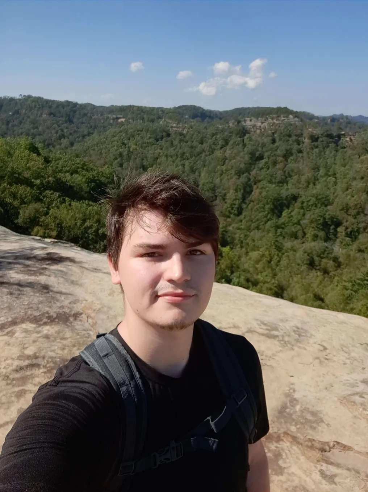

Graphic Designer
Hey Muchachos! I'm K. John-Leonard Ouillette, a passionate graphic designer with a flair for creativity and innovation. My journey in the world of design began at a young age, fueled by a love for art and technology. Over the years, I've honed my skills in various design software and techniques, allowing me to bring unique visions to life.